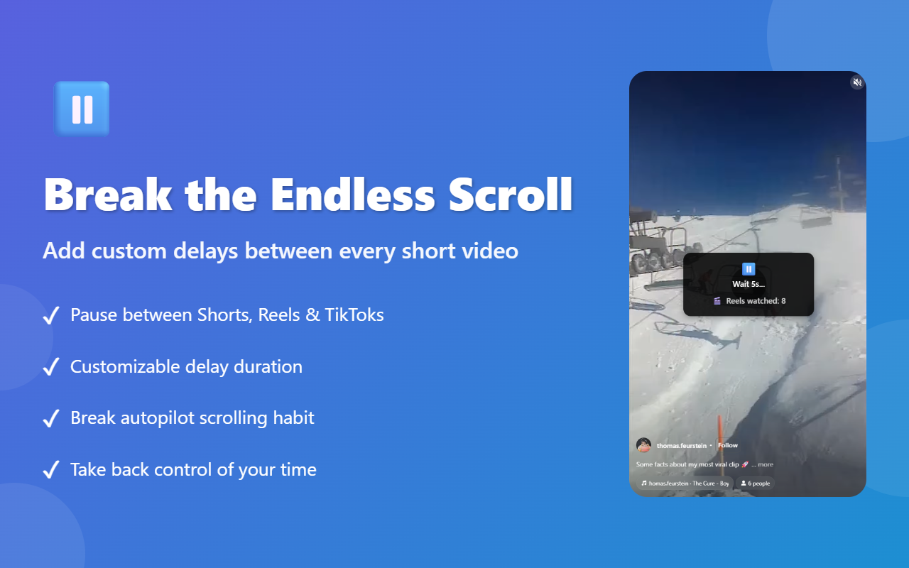
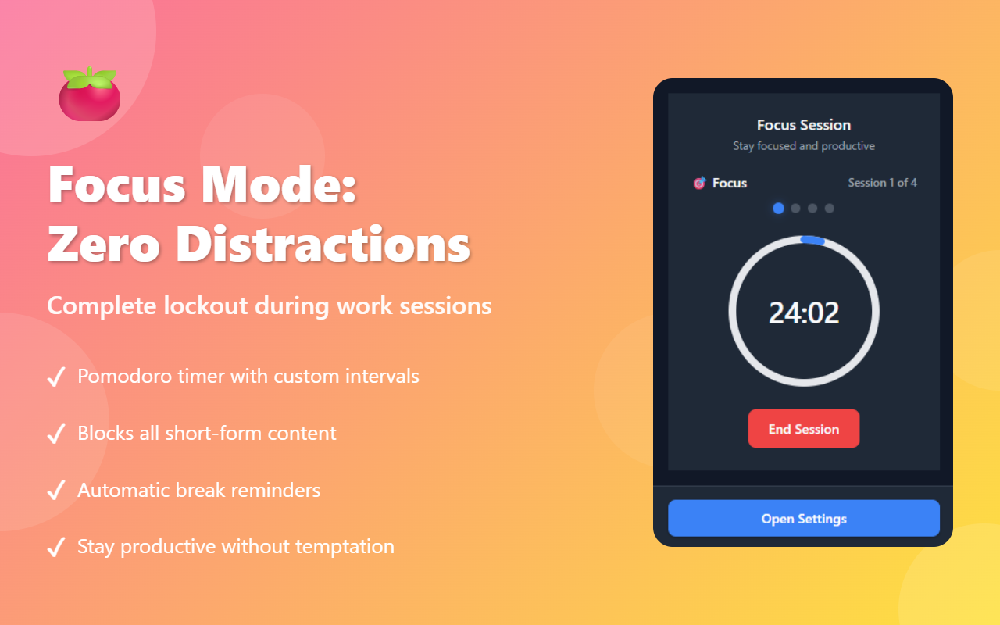
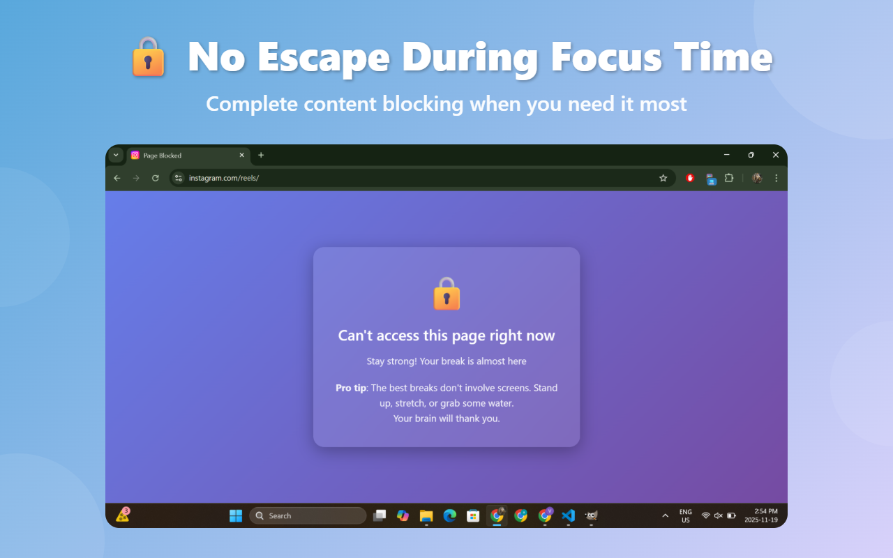
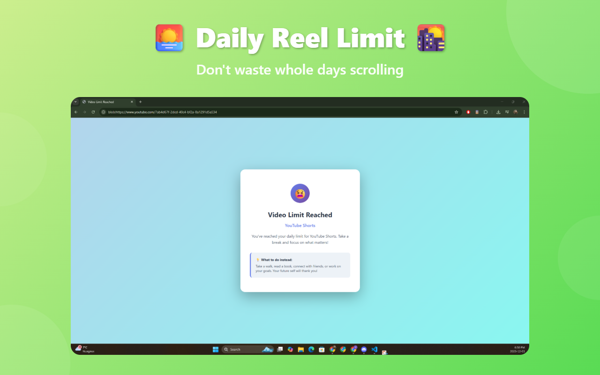
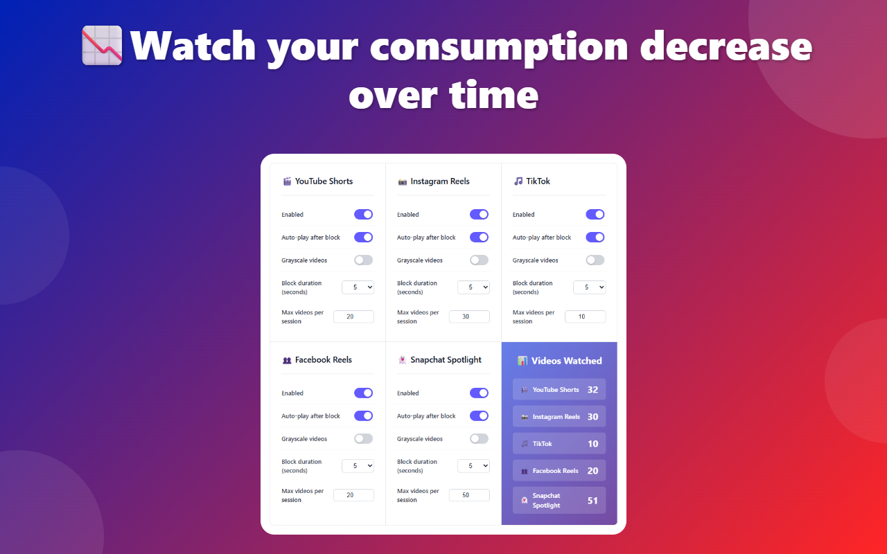

ScrollRot adds a deliberate delay before every Short, Reel, and TikTok — so you decide what to watch next, not the algorithm.

Autoplay, infinite scroll, and a fresh hit every few seconds. Willpower alone was never a fair fight — so ScrollRot changes the rules instead.
You open the app for a quick break and resurface much later with no idea where the time went. The scroll never gives you a natural stopping point.
Each swipe resets your concentration. Deep work gets harder, and the urge to check "just one more" follows you into everything else.
There's no decision to make, so you never make one. By the time you'd choose to stop, the algorithm has already chosen the next ten for you.
ScrollRot slots a moment of friction into the exact spot the apps removed it — between one video and the next.
Add it to Chrome or Firefox. No signup, no setup — it starts working the next time you open a feed.
A short pause appears before each video. That gap is enough for your brain to ask: do I actually want this?
Keep watching, or close the tab and get on with your day. Set daily limits and focus sessions to make it automatic.
Everything runs locally in your browser. Turn on only what you need.
Tune the pause from 3 to 10 seconds and find the friction that actually stops you.
Cap how many videos you'll watch per day. Hit the limit and the feed locks until tomorrow.
Drain the color out of the feed. Less visual pull means a lot less temptation.
See exactly how many videos you watched on each platform, every day. No guessing.
Start a session and short-form content is fully blocked until your timer is up.
No analytics, no tracking, no account. Your data never leaves your device — full stop.
Pauses, limits, focus lockouts, and your real usage — right where you scroll.




Install ScrollRot in about 30 seconds and feel the difference on your very next feed.
Free forever · No account · Privacy policy